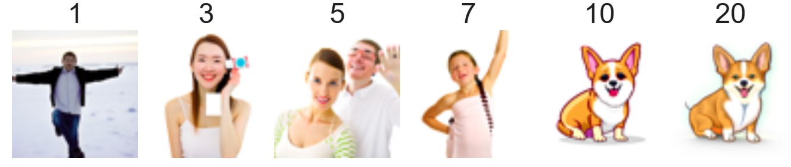
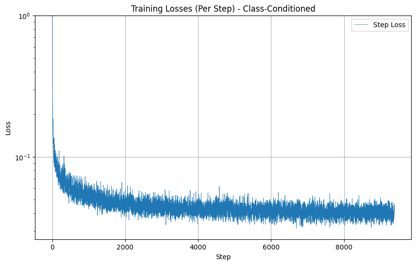

In this project, I implemented and deployed diffusion models for image generation.
First, we load the Deepfloyd IF diffusion model from HuggingFace. Deepfloyd was trained as a text-to-image model, so we also load some precomputed text embeddings. These are generated with a seed of 42. I also experimented with different inference steps (50 instead of 20). Here are a few sample images generated by those prompts:
First, we implement the forward process of diffusion, which takes a clean image and adds noise to it. The process runs these equations:
Here are images of the campanile at noise levels 250, 500, and 750:
Next, we will try to use Gaussian blur filtering to remove the noise. We can see that it is not very effective.
Next, we will use a pretrained diffusion model to denoise the image. For each of the three noisy images from 1.2, we denoised the image using the U-Net. This model predicted the noise in the image and attempts to remove it. Compared to Gaussian blur, this approach yielded much better results, though it struggled at higher noise levels.
Single-step denoising was effective, but we take it further by implementing an iterative denoising process. Starting with a highly noisy image, I gradually reduced the noise over multiple steps.
We use this equation:
where:
At each step, we remove some noise based on specific calculations using noise scaling coefficients. We denoise from t = 990 to t = 0 with a stride of 30. The results were significantly better, especially for heavily noised images.
After understanding denoising, I used the diffusion model to generate images from scratch. Starting with pure noise, I iteratively denoised to create "high-quality photos". Here are the results:
Next, we use classifier-free guidance (CFG), which combines conditional and unconditional noise estimates to improve image quality. By emphasizing relevant details while retaining some randomness, CFG enhanced the coherence and structure of the generated images. Intuitively, it can be thought of as noise moving more in the direction of the condition given in the model. We combine CFG on top of iterative denoising, so the noise is progressively refined until we get a structured image. Here are the results:
Recall in part 1.4 we took a real image, added noise to it, and denoised it. This essentially caused us to make edits to those images. The more noise added, the more the diffusion model "hallucinated" new things. Here, we do a similar process, this time using CFG, following the SDEdit algorithm. We run the forward process to get a noisy test image, and then run iterative_denoise_cfg using a starting index of [1, 3, 5, 7, 10, 20] steps. Here are the results:


Next, I tried this on some web images and some hand-drawn images:
Using binary masks, I inpainted missing regions in images by combining the forward process and diffusion denoising loop. At every step, after obtaining x_t, we ensure that x_t has the same pixels as x_{origin} in areas that are not masked out. This technique fills in the gaps from the mask while preserving unmasked areas. Here are the results:
Next, we do the same thing as SDEdit, but we guide the projection with different text prompts that are transformed into the input images:


Next, we create images that flip between two interpretations depending on orientation. For example, one image shows "an oil painting of people around a campfire" but reveals "an oil painting of an old man" when flipped upside down.
To do this, we will denoise an image x_t at each step normally with the prompt "an oil painting of an old man" to obtain noise estimate ϵ₁. But at the same time, we will flip the image upside down and denoise with the prompt "an oil painting of people around a campfire" to get noise estimate ϵ₂. We can flip ϵ₂ back to make it right-side up and average the two noise estimates. We can then perform a reverse/denoising diffusion step with the averaged noise estimate. The algorithm is as follows:
Here are the results:


Just like in project 2, we can also create hybrid images using frequency-based blending. We create a composite noise estimate by estimating the noise with two different text prompts and then combining low frequencies from one noise estimate with high frequencies of the other. The algorithm is as follows:
Here are the results:
In this part, I will train my own diffusion model on MNIST.
First, we start by training a one-step denoiser. In other words, this model will map a noisy image to a clean image by optimizing over L2 Loss.
To implement the UNet, we use downsampling and upsampling blocks with skip connections. This diagram describes the procedure:

It uses a number of standard tensor operations defined as follows:

Our UNet architecture utilizes convolutional layers with GELU activation functions in the encoder for downsampling and transposed convolutional layers in the decoder for upsampling. Skip connections are integrated between the encoder and decoder layers. The model is trained on image pairs using MSE loss and optimized with the Adam optimizer.
Here is a visualization of the different noising processes over sigma values of [0.0, 0.2, 0.4, 0.5, 0.6, 0.8, 1.0]:
Next, we train on noisy images with sigma = 0.5 and dynamically add image batches using a batch size of 256 for 5 epochs. We define our model with hidden dimension 128 and use a fixed learning rate of 0.0001. This yields the following loss curve:
We visualize the denoised results on the test set for the model after the first and fifth epoch:
Our model was trained on MNIST digits noised with sigma = 0.5. Next, we test the performance of our denoiser on sigmas = [0.0, 0.2, 0.4, 0.5, 0.6, 0.8, 1.0]. Here are the results:
Next, we train a time-conditioned UNet for iterative denoising within a DDPM framework. Instead of predicting clean images, the model predicts noise, using a variance schedule that increases noise from 0.0001 to 0.02 over 300 timesteps. By conditioning the UNet on the timestep, a single model can handle varying noise levels during the diffusion process. The training objective minimizes the mean squared error between the predicted and actual noise at randomly sampled timesteps.
We use batch size 128 for 20 epochs, learning rate = 0.001, and hidden dimension of 64. We follow this training algorithm:
This generates the following time-conditioned UNet training loss graph:
Next, we sample from our diffusion model. This yields these results for epochs 1, 5, and 20:
Next, to add class-conditioning to our model, we add two additional FCBlocks for processing class as well as time, where we use a one-hot encoding for class. Training for this section will be the same as time-only, with the only difference being the conditioning vector c and doing unconditional generation periodically. We follow this algorithm:

Here is the class-conditioned UNet training loss graph:
Here are the results of sampling from epochs 5 and 20 from the class-conditioned UNet: